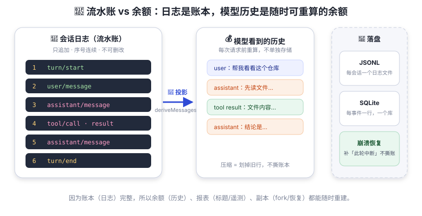

会话日志：唯一真源
流水账 vs 余额：模型历史不单独存储，随时从日志重算。这是 dsh 最反直觉也最优雅的设计。
一家小店的账本有两种记法。第一种：每天只记「今天余额 500 元」。第二种：流水账——每笔收入支出都记一行，想要余额随时加一遍。第一种省事，但老板查账时永远解释不清「昨天 500，今天怎么变 300 了」；流水账麻烦，但任何一天的任何数字都能重算出来，而且永远对得上——想对不上都难。
dsh 的会话就是一本流水账：每一次轮次、每一步、每一条消息、每个工具调用，都是一行「账」。而模型看到的历史——就像余额——从不单独存储，每次请求前现算。老板（你）随时查账，会计（dsh）永远不慌。

账本里记着什么？—— 13 种核心事件
每个事件带一个单调递增的 seq（像发票编号，中间缺号会被拒绝加载）、
time 和一个按类型区分的 data。核心事件共 13 种
（插件还可以用声明合并扩展新事件）：
| 事件 | 中文一句话 |
|---|---|
turn/start · turn/end | 打开 / 关闭一个轮次（end 带原因：完成、中止、阻塞、错误、超长、中断……） |
step/start · step/end | 打开 / 关闭一个步骤 |
user/message | 一条模型可见的用户消息（真人输入、注入、目标续跑，source 区分来源） |
assistant/chunk | 原始流式分片 —— 保证 token 级回放保真 |
assistant/message | 组装好的 assistant 消息（派生历史用它），携带用量 |
tool/call · tool/result | 模型请求一次工具调用 / 工具完成的模型可见结果（callId 配对） |
todo/write | 待办清单的全量快照（最新写覆盖） |
request/header | 下一次请求的完整请求头快照（配置 + 提示词 + 工具 schema） |
request/context | 路由容量等元数据 |
session/end-seed | 种子（恢复 / fork / 回放）的结束边界 |
deriveMessages()：从账本算余额
每次模型请求前，驱动器调用 deriveMessages() 把日志投影成模型历史：
只有三类事件会产生「消息」——user/message（用户消息）、
assistant/message（助手消息）、tool/result（变成带 tool-result 块的消息）。
其余事件（轮次边界、请求头、待办）不进入历史。
这也带来了一个优雅的副产品：压缩（compaction）不用撕账本。 上下文太长时，压缩插件在派生历史时把旧内容「划掉」换成摘要（surface replace）， 日志本身依然完整 —— 随时还能从原始账本重新算出别的视角。
「任何抵达模型请求的东西，都必须能从会话日志重建。」 这条不变量由运行时强制检查：如果你想给模型新增一种可见输入（比如注入一段新上下文）， 就必须新增一个会话事件并让它在日志里可渲染。 换句话说：每个对话请求都是日志的纯函数 —— 同一本账，永远算出同一个结果。
账本存在哪？—— 持久化
会话日志通过 ctx.sessionPersistence 这个 seam 落盘，官方提供两个后端，
在组合时二选一（或都装）：
- JSONL：每个会话一个只追加的逻辑日志文件（默认
.jsonl.zstd压缩格式）， 布局为root/--目录--/会话id/session.jsonl.zstd； - SQLite：一个数据库文件，每个事件一行
(session_id, seq, type, time, data, …)，追加即一个事务。
崩溃恢复不撕账：如果日志停在打开的 turn/start（没有对应 turn/end），
加载时保留全部已持久事件，并补一条合成的 turn/end { kind: 'interrupted' } 配平 ——
只丢弃从未完整写入的「撕裂尾部」。
另外还有一个 session/flush 检查点：相当于「下班前强制落账」，
等所有缓冲的写入真正耐久（fsync / 事务提交）后才返回。
因为下游全是免费的：回放（transcript）直接读日志；fork 一个会话 = 复制日志加种子前缀； 崩溃恢复 = 重放日志；自动标题 = 从日志折叠；遥测 = 订阅日志流。 dsh 没有维护一份「对话记录」加一份「模型历史」再加一份「界面缓存」—— 只有一本账，其余全是投影。